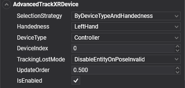

AdvancedTrackXRDevice

AdvancedTrackXRDevice makes an entity follow any tracked device, not only controllers and hands: the headset itself, Vive trackers strapped to props or people, or the base stations of the play area. You choose the device by type, handedness, index, or a combination of them.
It exposes the union of the other tracking components: the controller state of TrackXRController and the joints of TrackXRArticulatedHand. Use those simpler components when they fit, and this one for everything else.
Selecting the device
SelectionStrategy decides which properties pick the device:
| SelectionStrategy | Uses | Picks |
|---|---|---|
ByDeviceTypeAndHandedness (default) |
DeviceType, Handedness, DeviceIndex |
The DeviceIndex-th device of that type and handedness. The left controller, for example. |
ByDeviceType |
DeviceType, DeviceIndex |
The DeviceIndex-th device of that type, whatever its handedness. The second generic tracker, for example. |
ByHandedness |
Handedness, DeviceIndex |
The DeviceIndex-th device with that handedness, whatever its type. |
ByDeviceIndex |
DeviceIndex |
The device at that position in the platform's list of tracked devices. The order depends on the platform. |
Properties
| Property | Default | Description |
|---|---|---|
| SelectionStrategy | ByDeviceTypeAndHandedness |
How the device is selected, from the table above. |
| DeviceType | Controller |
The XRTrackedDeviceType to look for. See the values below. |
| Handedness | LeftHand |
LeftHand, RightHand, or Undefined for devices with no side, such as the HMD or a tracker. |
| DeviceIndex | 0 | A uint. With the type and handedness strategies, which of the matching devices to take (0 is the first). With ByDeviceIndex, the position in the platform's list. |
| TrackingLostMode | DisableEntityOnPoseInvalid |
What happens to the entity when tracking fails. See common properties. |
| ControllerState | Read-only | The input state, when the device is a controller or a hand. See controller state. |
| SupportedHandJointKind | Read-only | The joints the device tracks, when it is a hand. |
It also has the members every tracking component shares, listed in common properties, and TryGetArticulatedHandJoint(XRHandJointKind jointKind, out XRHandJoint joint), which returns the joint as the platform reports it, in tracking space.
Device types
| XRTrackedDeviceType | Device | Platforms |
|---|---|---|
HMD |
The headset. | OpenXR, OpenVR |
Controller |
A motion controller. | OpenXR, OpenVR |
Hand |
A tracked hand. | OpenXR with XR_EXT_hand_tracking |
GenericTracker |
A tracker without its own input, such as a Vive Tracker. | OpenVR |
TrackingReference |
A device that supplies tracking ground truth, such as a base station or a tracking camera. | OpenVR |
DisplayRedirect |
An accessory that is not tracked itself but can redirect video output from another tracked device. | OpenVR |
Using AdvancedTrackXRDevice
This scene tracks both controllers and two generic trackers. The trackers keep their last pose when tracking is lost, so a prop does not vanish when it is briefly occluded:
using Evergine.Components.XR;
using Evergine.Framework;
using Evergine.Framework.Graphics;
using Evergine.Framework.XR;
using Evergine.Framework.XR.TrackedDevices;
public class TrackersScene : Scene
{
protected override void CreateScene()
{
base.CreateScene();
// The two controllers.
var leftController = new Entity("LeftController")
.AddComponent(new Transform3D())
.AddComponent(new AdvancedTrackXRDevice()
{
SelectionStrategy = TrackXRDevice.SelectionDeviceStrategy.ByDeviceTypeAndHandedness,
DeviceType = XRTrackedDeviceType.Controller,
Handedness = XRHandedness.LeftHand,
});
var rightController = new Entity("RightController")
.AddComponent(new Transform3D())
.AddComponent(new AdvancedTrackXRDevice()
{
SelectionStrategy = TrackXRDevice.SelectionDeviceStrategy.ByDeviceTypeAndHandedness,
DeviceType = XRTrackedDeviceType.Controller,
Handedness = XRHandedness.RightHand,
});
// Two generic trackers, told apart by their order of appearance.
var firstTracker = new Entity("Tracker0")
.AddComponent(new Transform3D())
.AddComponent(new AdvancedTrackXRDevice()
{
SelectionStrategy = TrackXRDevice.SelectionDeviceStrategy.ByDeviceType,
DeviceType = XRTrackedDeviceType.GenericTracker,
DeviceIndex = 0,
TrackingLostMode = TrackXRDevice.XRTrackingLostMode.KeepLastPose,
});
var secondTracker = new Entity("Tracker1")
.AddComponent(new Transform3D())
.AddComponent(new AdvancedTrackXRDevice()
{
SelectionStrategy = TrackXRDevice.SelectionDeviceStrategy.ByDeviceType,
DeviceType = XRTrackedDeviceType.GenericTracker,
DeviceIndex = 1,
TrackingLostMode = TrackXRDevice.XRTrackingLostMode.KeepLastPose,
});
this.Managers.EntityManager.Add(leftController);
this.Managers.EntityManager.Add(rightController);
this.Managers.EntityManager.Add(firstTracker);
this.Managers.EntityManager.Add(secondTracker);
}
}
Attach content to the head
The camera renders from the head, but on stereo platforms its own transform does not move with it. To place something that follows the head, such as a reticle or a head-mounted light, track the HMD:
using Evergine.Components.XR;
using Evergine.Framework;
using Evergine.Framework.Graphics;
using Evergine.Framework.XR;
using Evergine.Framework.XR.TrackedDevices;
public class HeadScene : Scene
{
protected override void CreateScene()
{
base.CreateScene();
var head = new Entity("Head")
.AddComponent(new Transform3D())
.AddComponent(new AdvancedTrackXRDevice()
{
SelectionStrategy = TrackXRDevice.SelectionDeviceStrategy.ByDeviceType,
DeviceType = XRTrackedDeviceType.HMD,
});
this.Managers.EntityManager.Add(head);
}
}
Children of Head then move with the user's head, and Transform3D.Forward of the entity is the view direction. Use it rather than Pointer, which OpenXRPlatform does not fill for the HMD.